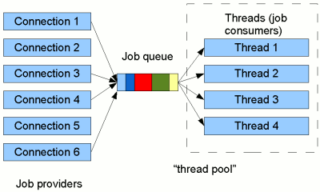
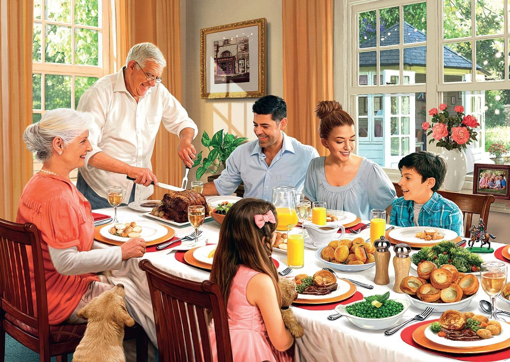

Лекция 7
Распространенные практики в многопоточности
Содержание
- пул потоков (thread pool)
- асинхронное программирование
- атомарные операции и lock-free
Пул потоков
Переключение контекста

Переключение контекста
Большое количество потоков добаляет накладные расходы на планирование, выполнение потоков, на хранение контекста потоков и пр.
Переключение контекста
Зачастую бывает полезно ограничить количество потоков в приложении, чтобы снизить накладные расходы и достичь наибольшей выгоды от многопоточности.
Очередь перед кассой
Пул потоков
Проблему огромного количества потоков в приложении призван решить пул потоков.
Пул потоков
В стандартной библиотеке C++ нет пула потоков.
Но его несложно реализовать с помощью стандартных средств C++ для своих целей.
Пример TreadPool
class TreadPool {
public:
ThreadPool(size_t workers_count);
template<class F,
class R=std::result_of_t<F&()>,
class... Args>
std::future<R> enqueue(F&& func, Args&&... args);
};
Пример TreadPool
Основной метод любого пула потоков – это метод, с помощью которого можно добавлять задачу на выполение.
В примере выше, это метод enqueue.
Метод enqueue
std::future<R> enqueue(F&& func, Args&&... args);
- метод возвращает
futureна результат выполнения функции - принимает функцию
func, которую необходимо выполнить - и принимает аргументы
args, которые необходимо передать в функциюfuncво время выполнения
Метод enqueue
Аргументы в точности повторяют аргументы функции std::async.
По факту, std::async может не создавать новый поток для исполнения задачи, а использовать поток из встроенного пула, но это зависит от конкретной реализации b компилятора.
Пример
// Создаем пул потоков на 10 потоков.
static ThreadPool pool(10);
Response GetRequest(std::string uri);
void HttpHandler(Request req);
// Добавляем задачу на выполение в пул потоков.
pool.enqueue(HttpHandler, std::move(req));
// Добавляем задачу на выполение в пул потоков.
std::future<Response> response =
pool.enqueue(GetRequest, "http://cppreference.com/");
// Working...
// Получение результата функции GetRequest.
std::cout << response.get();
Как устроен пул потоков
Как устроен пул потоков
По сути, это применение шаблона producer-consumer.
В качестве consumer’ов выступают потоки, которые выполняют поставленные в очередь задачи.
В качестве producer’ов – пользовательский код.
Модификации пула потоков
Иногда, чтобы решить задачу в “виртуальном” мире достаточно посмотреть как подобная задача решается в “реальном” мире.
Динамическое добавление и снятие потоков
В магазине не на всех кассах сидят кассиры. Но в случае большой загруженности магазина на свободные кассы приходят работники.
Когда небольшая загруженность, кассиры начинают выполнять другую работу, либо берут отгулы, что экономит магазину ресурсы.
Локальные очереди для каждого потока
У каждой кассы собираются небольшие очереди. Это помогает очередям двигаться быстрее, а не толкаться в большой очереди мешая друг другу добираться до свободных кассиров.
Но иногда у одной кассы собирается большая очередь, а другие пустуют.
Резюме
- пул потоков предоставляет высокоуровневую абстракцию, позволяющую не задумываться о ручном управлении потоков
- пул потоков позвояет избежать накладных ресурсов на создание и уничтожение нового потока
- пул потоков помогает уменьшить суммарное время, затрачиваемое на переключение контекста потоков
Асинхронное программирование
Как приготовить ужин
Как приготовить ужин

Cинхронная модель
Обычно в программировании используется последовательное синхронное выполнение инструкций и вызовов функций, которые блокируют поток выполнения.
Пример
void Echo(tcp::socket socket) {
std::array<char, 1024> data;
while (true) {
// |read_some| - синхронная функция.
// Поток остановится до завершения |read_some|.
std::size_t n = socket.read_some(
boost::asio::buffer(data));
// |write_some| - синхронная функция.
// Поток остановится до завершения |write_some|.
socket.write_some(
boost::asio::buffer(data, n));
}
}
while (true) {
tcp::socket socket = acceptor.accept();
std::thread(Echo, std::move(socket)).detach();
}
Cинхронная модель
Одна из проблем такого подхода в том, что часто приходится ждать неких внешних событий: чтение файла с диска, передача/получение данных по сети и т.д.
Cинхронная модель
При этом текущий поток вынужден ждать, а не выполнять полезную работу.
Это приводит к проблемам производительности приложения.
Асинхронное модель
В асинхронной модели программирования поток может приостановить выполнение задачи, сохранив текущее состояние, и начать выполнение другой задачи.
Асинхронное модель
Системные вызовы выполняются в неблокирующем режиме, что позволяет потоку продолжить работу.
Пример
void Echo(tcp::socket socket) {
std::array<char, 1024> data;
auto on_write_callback =
[=](boost::system::error_code ec, size_t n) {
Echo(std::move(socket));
};
auto on_read_callback =
[=](boost::system::error_code ec, size_t n) {
socket.async_write_some(
boost::asio::buffer(data, n), on_write_callback);
};
socket.async_receive(
boost::asio::buffer(data), on_read_callback);
}
void DoAccept() {
tcp::socket socket;
auto callback = [socket](boost::system::error_code ec) {
Echo(std::move(socket));
DoAccept();
};
acceptor.async_accept(socket, callback);
}
Замечание
Представленный выше код является псевдокодом. Реальный код не представлен на слайдах, для упрощения понимания примера.
Чтобы увидеть работающий код, смотрите пример к лекции.
Псюсы асинхронности
Использование асинхронного программирования позволяет одному потоку обрабатывать несколько сетевых соединений, а не проставивать пока выполняется системный вызов одного соединения.
Функции обратного вызова
Функции обратного вызова (callback) – функции, которые будут вызываны после того, как завершится процесс запущенный в асинхронном режиме.
Callback
С помощью callback’ов получается обрабатывать результат асинхронных фунций.
Асинхронное приготовление ужина
Пример callback
Callback
socket.async_receive(boost::asio::buffer(data), on_read_callback);
В примере лямбда on_read_callback является callback-функцией.
Лямбда on_read_callback будет вызвана после того как будут получены данные по сети и завершится системный вызов.
Проблемы callback-функций
Код с использованием callback-функций становится запутанным, нарушается последовательность кода.
Легко “заблудитья”, в какой момент и в каком порядке будут вызываться callback-функции.
Проблемы callback-функций
Но куда более проблематично, всегда необходимо заботиться о времени жизни объектов, которые используются в callback-функциях.
Совет
Всегда, когда имеете дело с callback-функциями, думайте о времени жизни объектов, с которыми работаете в callback’ах.
Сопрограммы
Чтобы решить проблемы, связанные с использованием callback-функций, можно воспользоваться сопрограммами (coroutine).
Сопрограммы
Сопрограмми называются функции, имеющие несколько точек входа, в то время как, у обычных функций есть только одна.
Пример
awaitable<void> Echo(tcp::socket socket) { // <- Entry point 1.
std::array<char, 1024> data;
while (true) {
std::size_t n = co_await socket.async_read_some(
boost::asio::buffer(data), use_awaitable);
// <- Entry point 2.
co_await async_write(
socket, boost::asio::buffer(data, n), use_awaitable);
// <- Entry point 3.
}
}
while (true) {
tcp::socket socket = co_await acceptor.async_accept(
use_awaitable);
Echo(std::move(socket));
}
Точки входа
Функция Echo является сопрограммой. У нее три точки входа:
- Как у обычных функций в начале тела функции
- После асинхронного чтения данных из сокета.
- После асинхронной записи данных в сокет.
co_await
Оператор co_await приостанавливает сопрограмму и возвращает управление вызывающему коду.
co_await
После того, как будут и завершится процесс, запущенный в асинхронной функции, сопрограмма продолжит свою работу с того места, где была приостановлена, т.е. со своей следующей точки входа.
Преимущества сопрограмм
Использование сопрограмм позволяет писать асинхронный код, который выглядит как синхронный. Такой код проще реализовывать, отлаживать и использовать.
Резюме
-
асинхронное программирование позволяет избежать появления узких мест производительности и увеличить общую скорость реагирования приложения
-
асинхронность необходимо использовать при наличии потенциально блокирующих работу действий
-
асинхронность полезна при обращении к потоку пользовательского интерфейса
Резюме
-
при разработке callback-функций продумывайте, как объекты “доживут” до вызова callback’a
-
использование сопрограмм в асинхронном программировании помогает упростить код
-
в зависимости от реализации сопрограммы иногда бывают эффективнее callback’ов
-
сопрограммы полезны не только при асинхронности, например, еще и при реализации генераторов
Атомарные операции
Атомарные vs неатомарные
Операция называется атомарной, если она завершается в “один шаг” относительно других потоков, т.е. ни один поток не может наблюдать изменение частично завершенным.
Атомарные vs неатомарные
Неатомарные операции такой гарантией не обладают.
Неатомарная переменная
int global_count = 0;
std::vector<std::thread> group;
void inc() {
++global_count;
}
for (int i = 0; i < N; ++i) {
group.push_back(std::thread(inc));
}
for (auto& th : group) {
th.join();
}
// global_count == ?
std::cout << global_count;
Атомарная переменная
std::atomic<int> global_count = 0;
std::vector<std::thread> group;
void inc() {
++global_count;
}
for (int i = 0; i < N; ++i) {
group.push_back(std::thread(inc));
}
for (auto& th : group) {
th.join();
}
// global_count == N
std::cout << global_count;
atomic
load()- получить текущее значениеstore()- присвоить новое значениеis_lock_free()- возвращает true, если операции на данном типе неблокирующиеoperator++- инкрементexchange()- установить новое значение и вернуть предыдущееcompare_exchange_strong()- аналог CAScompare_exchange_weak()- аналог CAS- …
CAS (Compare and Swap)
Операция атомарно сравнивает значение одного объекта с другим и при равенстве измениет значение объекта.
compare_exchange
// Псевдокод. Вся функция работает атомарно.
bool compare_exchange(T& obj, T& expected, T value) {
bool result = (obj == expected);
if (result) {
obj = value;
} else {
expected = obj;
}
return result;
}
compare_exchange
Разница между compare_exchange_weak и compare_exchange_strong заключается в том, что compare_exchange_weak на некоторых платформах может вернуть false и НЕ выполнить обмен даже в случае равных значений.
Lock-free программирование
Неблокирующая синхронизация – подход в параллельном программировании, в котором принят отказ от традиционных примитивов блокировки.
Преимущества lock-free
- блокировки довольно медленные операции
- при блокировках поток с низким приоритетом может заблокировать поток, с более высоким приоритетом
Определение
-
Процедура считается lock-free, если для нее гарантируется прогресс как минимум одного потока, выполняющего эту процедуру. Другие потоки могут ждать, но минимум один поток должен прогрессировать.
-
Операция называется wait-free, если она завершается за определенное количество шагов, не зависящих от состояние и действий других потоков.
Реализация lock-free
Неблокирующие алгоритмы строятся на атомарных операциях.
Одна из самых значимых операций при lock-free программирование – это сравнение с обменом (CAS).
Lock-free stack
Чтобы лучше разобраться с lock-free алгоритмами, необходимо рассмотреть пример.
Для этого реализуем потокобезопасной стек с использованием lock-free программирования.
LockFreeStack
template <typename T>
struct LockFreeStack {
void Push(const T& value);
Node* Pop();
struct Node {
T data;
Node* next;
};
private:
std::atomic<Node*> head_;
};
Push
void Push(const T& value) {
Node* new_head = new Node(value, head_.load());
while (
!head_.compare_exchange_weak(new_head->next, new_head)
) { }
}
Pop
Node* Pop() {
Node* node = head_.load();
while (node &&
!head_.compare_exchange_weak(node, node->next)
) { }
return node;
}
Резюме
- lock-free программирование – один из альтернативных методов реализации потокобезопасного кода
- lock-free программирование – не панацея и не надо бездумно применять его вместо блокирующих операций
- lock-free программирование – может, но не обязано, повысить производительность вашего приложения
Домашнее задание
- stackless coroutine
- stackfull coroutine
- stackfull vs stackless
- освобождение памяти в lock-free структурах данных
- hazard pointers